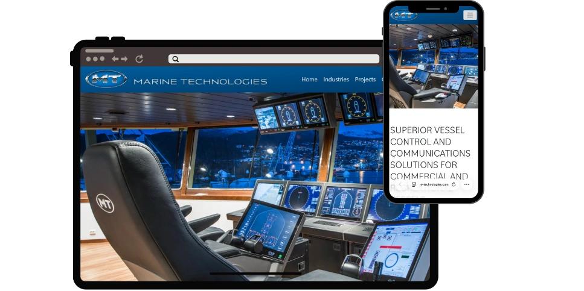

Astilleros y varaderos
Capacidades, infraestructura, esloras atendidas, certificaciones y proyectos presentados con rigor.
Estrategia digital especializada en el sector marítimo
Creamos sitios web bilingües, posicionamiento y sistemas de captación para astilleros, talleres navales, marinas y proveedores que necesitan ganar confianza antes de la primera conversación.
01 / Enfoque
En el sector marítimo, una página debe demostrar capacidad, reducir dudas y facilitar que un armador, capitán, gerente de flota o comprador encuentre la información necesaria para contactar.
02 / Sectores
Una estructura diferente para cada modelo de negocio marítimo.
Capacidades, infraestructura, esloras atendidas, certificaciones y proyectos presentados con rigor.
Mecánica, electricidad, pintura, detailing, electrónica y reparación naval visibles en búsquedas locales.
Instalaciones, amarres, ubicación, servicios y vías de contacto organizadas para navegantes y operadores.
Catálogos técnicos, marcas, cobertura, soporte y documentación para procesos B2B.
03 / Servicios
Podemos empezar con el sitio y ampliar el sistema a medida que exista tracción.
Arquitectura comercial, diseño responsive, contenido técnico, formularios y medición.
Páginas enfocadas en búsquedas de servicio, ubicación y necesidades específicas del comprador.
Casos, instalaciones, equipos, certificaciones y documentación organizados para evaluación comercial.
Mantenimiento, análisis, páginas nuevas y mejoras basadas en consultas y oportunidades reales.
04 / Laboratorio
Conceptos de demostración que muestran cómo abordar distintos segmentos, estructuras y necesidades del mercado marítimo.
 Concepto de demostración · SuperyatesPresencia premium y experiencia bilingüe
Concepto de demostración · SuperyatesPresencia premium y experiencia bilingüe

Concepto de demostración · TecnologíaCapacidades complejas, explicadas con claridad Concepto de demostración · AstilleroConfianza local y rutas de contacto
Concepto de demostración · AstilleroConfianza local y rutas de contacto
05 / Proceso
Revisamos presencia, competencia, servicios y recorrido actual del prospecto.
Organizamos la oferta, la evidencia y las rutas de conversión antes de diseñar.
Diseño, contenido, desarrollo bilingüe, SEO y conexión de formularios.
Activamos seguimiento y mejoramos con base en comportamiento y consultas reales.
06 / Perspectivas
Testimonios editoriales utilizados para ilustrar las necesidades frecuentes del sector.
“MarineTech captó nuestra terminología técnica al instante. No tuvimos que explicar qué es un varadero.”
“El portafolio de proyectos industriales ahora transmite la confianza necesaria para conversaciones comerciales más exigentes.”
“La nueva estructura permite entender capacidades, servicios y contacto sin perderse en información genérica.”
07 / Contacto
Cuéntanos qué hace tu empresa y qué necesitas mejorar. Revisaremos tu presencia digital y te responderemos con un siguiente paso concreto.